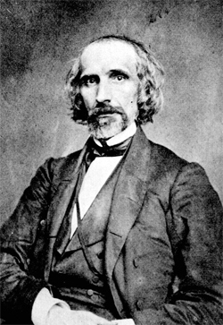
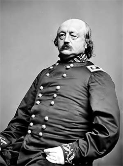

|
Confederate policy makers, like Southern whites generally, regarded black men in
arms against their masters as rebels. The enlistment of black soldiers in
Union-occupied South Carolina and Louisiana in 1862 met with cries of outrage
from Confederate leaders, who condemned Union Generals David Hunter and John W.
Phelps and warned that all Union officers captured at the head of
insurrectionary slaves would be executed as felons rather than treated as
prisoners of war. For black soldiers, Confederate officials offered an even more
certain fate. Initially, Confederate field officers debated whether captured
blacks under arms should be shot or hanged, with most opting for hanging.
Secretary of War James A. Seddon, determined not to grant former slaves the
rights accorded prisoners of war and less troubled by means than ends, approved
summary execution without specifying the method. But in December 1862, President
Jefferson Davis, with a nice concern for due process, settled the debate. He
ordered Confederate commanders to turn captured black soldiers over to the
various state governments to be dealt with according to the appropriate state
statutes. All Southern states had laws prescribing death to black
insurrectionists--usually by hanging.
|

James Seddon
|
Confederate policy denying prisoner-of-war status to captured black soldiers or
their white officers had been well established by the early months of 1863, when
the federal government began large-scale black recruitment. Eliminating any
doubts that remained, the Confederate Congress, at the urging of Jefferson
Davis, issued a joint resolution in May 1863 restating Confederate policy.
officers of black regiments would be treated as criminals and soldiers who had
been slaves would be turned over to state authorities. Still, some confusion
remained. Confederate policy did not provide for captured free black soldiers.
Some state officials, particularly the governor of South Carolina, wanted to
treat free and formerly enslaved soldiers alike, and at first Richmond policy
makers appeared to agree. But by 1864, they seemed to have reversed themselves.
While never officially granted the rights of prisoners of war, black freemen
appear to have been treated much as were captured white soldiers.
Even as a coherent policy emerged, many Confederate field commanders remained
ignorant of the official stance. When they questioned the Confederate War
Department, the response did not always conform to the policy the President and
Congress had promulgated. In April 1863, Secretary of War Seddon, answering a
query from the field, ordered that captured blacks be put to work on Confederate
fortifications. Later that year, when General E. Kirby Smith of the
Trans-Mississippi Department suggested eliminating the problem of black
prisoners of war simply by not taking them alive, Seddon moved quickly to cool
Smith's murderous enthusiasm. While agreeing that a few examples might be made,
Seddon thought it better to return the "deluded victims" of Yankee perfidy to
their masters. This confusion and vacillation reflected growing concern among
Confederate policy makers that the Union would retaliate or that European public
opinion would be alienated at a time when the Confederate government still hoped
for French or British intervention in the South's favor. While they did not
retract their policy, Confederate War Department officials privately admitted
that the issue embarrassed them, and they discouraged state officers from
publicly trying and executing black soldier. Confederate field commanders, also
fearing Union retaliation and having no taste for the executioner's role, took
comfort in this unofficial turn toward moderation and either returned black
soldiers to their masters, sold them into slavery, or placed them at work as
slaves on Confederate fortifications. While falling short of the draconian
implications of official Confederate policy, such enslavement violated the
conventions of warfare and sent freemen as well as freedmen into bondage.
Official Union policy shared with its Confederate counterpart simplicity of
statement and clarity of meaning: the federal government would afford black
soldiers the same protection guaranteed white ones. Secretary of War Edwin M.
Stanton tendered these assurances to Massachusetts Governor John Andrew at the
onset of black recruitment. In April 1863, the codification of United States
Army laws for the conduct of land warfare gave Stanton's sentiment the stamp of
official policy, and in July President Abraham Lincoln added the weight of his
office to Stanton's pledge, promising to retaliate in kind for every Union
soldier murdered or enslaved, by executing or placing at hard labor one captured
Confederate soldier. Yet, like Confederate officials, Union policy makers and
army officers found it difficult to implement their stated policy. Although the
Union government ended all prisoner exchanges with the Confederacy when the
South excluded black soldiers from the exchange, it hesitated to execute
prisoners or place them at hard labor for fear of inviting counterretaliation by
the Confederacy not only against black prisoners but against white ones as well.
So the threats and counterthreats continued through the remainder of the war,
with each side accusing the other of various barbarities, but with neither side
willing to act consistently on its own stated policy.
With both Confederate and Union policy makers paralyzed by the implications of
their official positions it fell to field commanders to establish standards of
treatment for black prisoners of war. As early as May 1863, a confrontation
between Colonel James M. Williams, commander of the 1st Kansas Colored
Volunteers, and Major T. R. Livingston, a Confederate battalion commander,
demonstrated how brutal and deadly such events would be. But whatever action
Confederate commanders adopted, the official Confederate stance encouraged abuse
that went beyond enslavement. Some Confederate officers and enlisted men adopted
the official policy for their own and summarily executed black prisoners of war.
Others acted similarly in the heat of battle. Men taught from birth to give
little value to black humanity needed scant encouragement to vent their
frustrations on captured black soldiers. Such abuses appear to have increased
during the war as hope of Confederate victory slipped away and as ragtag
Confederate soldiers faced a better-fed and better-equipped black fighting
force. They doubtless reached their high point at Fort Pillow, Tennessee, where
Confederate soldiers, led by General Nathan B. Forrest, slaughtered hundreds of
black soldiers after they had surrendered.
|

Benjamin Butler
|
Union officers responded to such atrocities with horror and disbelief. A few
acted boldly to protect the soldiers of their command. In the fall of 1864, when
General Benjamin F. Butler found that Confederate forces had been using captured
black soldiers to construct fortifications along the James River, he placed an
equal number of prisoners of war at work on Union earthworks, inducing protest
from the Confederate commander, Robert E. Lee, and a threat of
counterretaliation, but, ultimately, the removal of black prisoners of war from
forced labor. Most Union officers, however, found their revulsion tempered by
their skepticism about the reports of atrocities and by their respect for
military protocol. Rather than seek immediate redress, they forwarded their
complaints to their superiors. While the War Department queried its Confederate
counterpart on the validity of various claims, the horror of such atrocities
lost its force. President Lincoln never saw need to redeem his pledge to
retaliate for the murder or enslavement of black soldiers, and field commanders
did so only sporadically.
Black soldiers and civilians had a longer memory. Fort Pillow and similar
affairs left an indelible mark in the minds of black fighting men. They fought
with a special ferocity knowing that they could never predict what surrender
might bring. Black civilians shared their fear and anger. They condemned the
government that failed to protect its own soldiers, and they begged Lincoln and
the War Department to respond forcefully to the abuse of black prisoners of war.
But to no avail. Black soldiers came to realize that, while they might have more
to gain in the war than whites, they also had more to lose.
Source: Freedmen and Southern Society Project, Freedom, A
Documentary History of Emancipation, 1861-1867 (New York: Cambridge
University Press, 1985), 567-70.
|